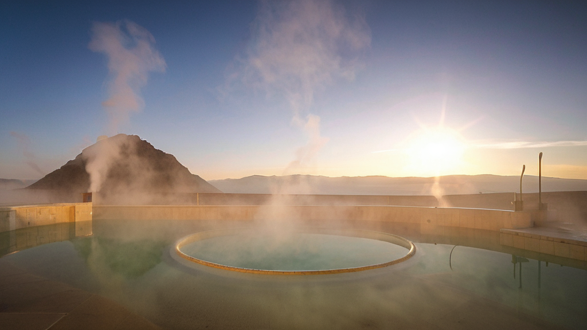
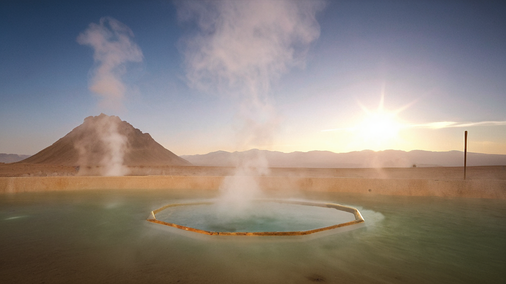
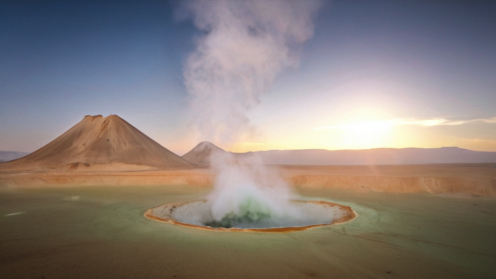
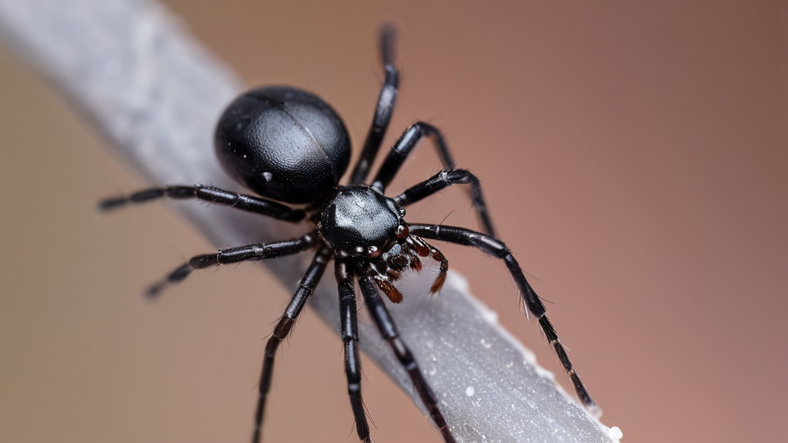

Research area 03 · Computational paleobiology
PaleoSound
Possible sounds of extinct organisms, reconstructed from fossil evidence and the scientific literature. Work in progress.
Waveform of model sound A (archaboilus_model_v2, about 3 s). Drawn from the audio envelope.
Everything on this page that is not a citation is an illustration or a model, not measured data. Bubbles, steam, geysers, volcano shape and sound design are artistic choices driven by the audio. Only the facts listed under "Sources" come from the literature.
Setting: Rhynie chert
The Early Devonian Rhynie chert is a silica-rich hot-spring and volcanic deposit. It preserves small plants and arthropods in unusual detail. The illustrations below show a plausible scene for that setting. They are not reconstructions of specific organisms or sites.



Plants and arthropods


Sound
Each scene is driven by a recording. The sound is split into three bands, and each band controls part of the image:
- 20–200 Hz: ground tremor, stem sway, crater glow, ash plume strength.
- 200–1500 Hz: rate of bubble events and foam.
- 1.5–8 kHz: steam density, eruption strength, steam rise speed.
The band mapping is a design choice for visualisation. It is not a claim about how Devonian organisms or environments sounded.
Model sound A — Archaboilus musicus (v2 model)
Model output, about 3 s, mono, 96 kHz. Not a reconstruction of a documented species. Method and parameters to be described.
Illustrative sound B — Sigmaboilus peregrinus
Illustrative only, about 0.2 s, mono, 96 kHz. Not a reconstruction of a documented species.
Sources
Facts used on this page are taken from the following kinds of sources. Full references will be added as they are checked.
| Statement | Status |
|---|---|
| Rhynie chert: Early Devonian, hot-spring and volcanic setting, silica-rich | Literature. Reference to be added. |
| Rhynia / Aglaophyton: leafless, no roots, forking stems, terminal sporangia | Literature. Reference to be added. |
| Aglaophyton height 2.5–5 cm | Teaching material, not a primary source. To be checked. |
| Trigonotarbids and arthropod assemblage | Literature. Reference to be added. |
| Bubbles, steam, geysers, volcano, sound mapping | Illustration or design choice. Not data. |
Status
Placeholder audio and text will be replaced as the work progresses. Nothing on this page has been peer-reviewed.